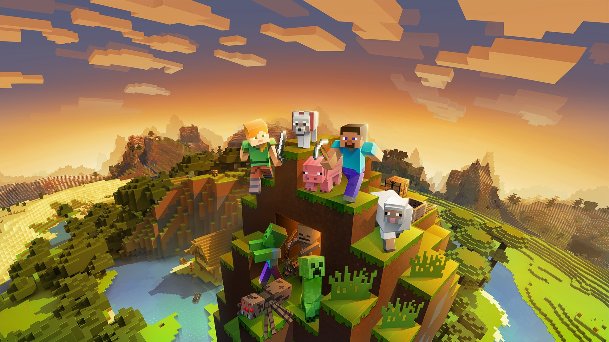
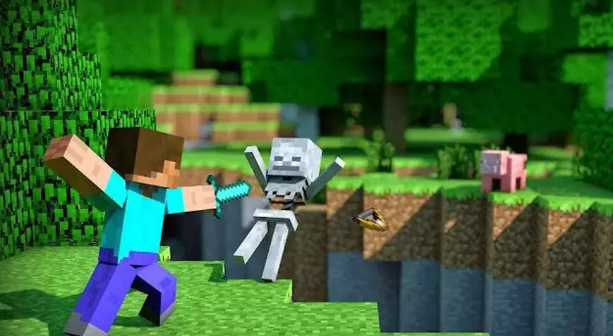
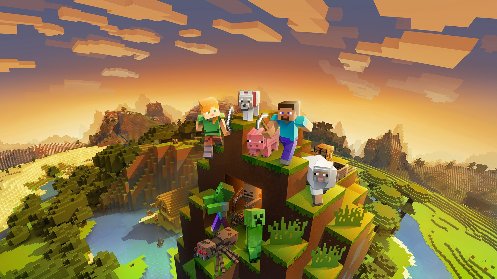
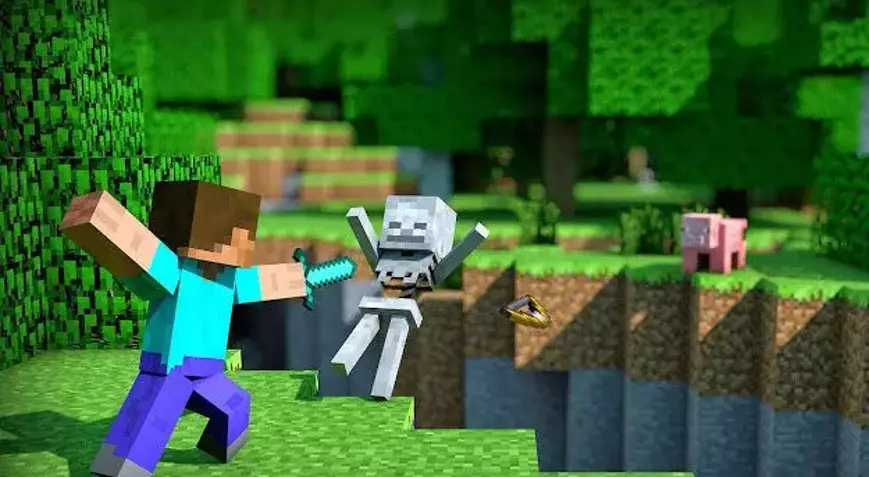
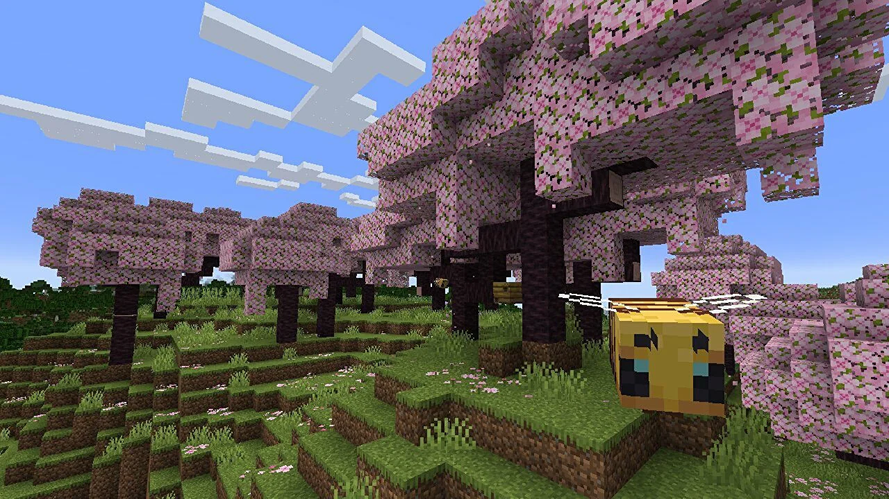
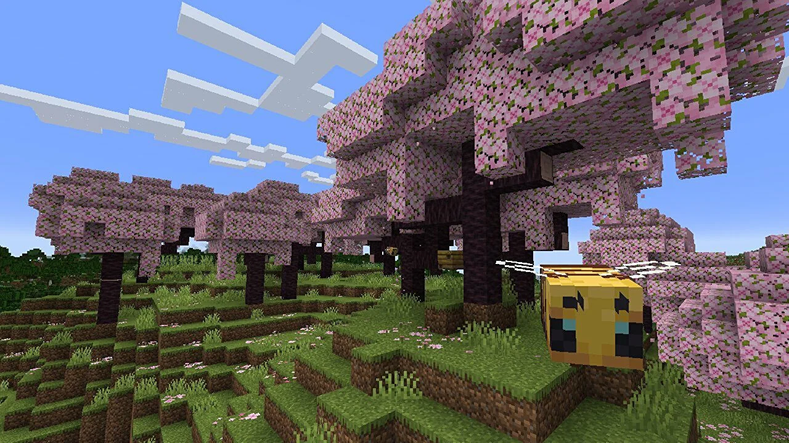

 

Minecraft, Mojang Studios’un geliştirdiği ve oyun dünyasını kökten değiştiren bir başyapıttır. 2011 yılında piyasaya sürülen bu açık dünya sandbox oyunu, oyunculara sınırsız bir özgürlük sunarak hayal gücünü gerçek bir oyun dünyasına taşıma fırsatı verir. Piksel tarzı görselleriyle basit görünen Minecraft, derin oynanış mekanikleri ve sonsuz keşif imkanlarıyla yıllardır popülerliğini koruyor.
Oynanış ve Mekanikler
Minecraft, tamamen oyuncunun yaratıcılığına dayalı bir oyun deneyimi sunar. Oyuncular, üç boyutlu bir dünyada blokları kırıp yerleştirerek yapı inşa eder, kaynak toplar ve hayatta kalmaya çalışır. Oyunun dört ana modu vardır: Hayatta Kalma (Survival), Yaratıcı (Creative), Macera (Adventure) ve Hardcore. Hayatta Kalma modunda oyuncular, kaynaklarını yöneterek ve düşmanlara karşı mücadele ederek zorlu bir ortamda yaşam mücadelesi verirken, Yaratıcı mod tamamen inşa etmeye ve tasarıma odaklanır.
Keşif ve Çevre
Minecraft’ın dünyası, tamamen rastgele oluşturulan biyomlarla doludur. Ormanlar, çöller, karlı dağlar, mağaralar ve lavlarla dolu yer altı dünyası gibi farklı bölgeler oyunculara sonsuz bir keşif fırsatı sunar. Oyuncular sadece yüzeyde değil, aynı zamanda yer altında da zenginlik ve tehlikelerle dolu bir dünya keşfeder.
Çok Oyunculu Deneyim
Minecraft, arkadaşlarla veya çevrimiçi oyuncularla birlikte oynandığında çok daha eğlenceli hale gelir. Sunucular üzerinde özel oyun modları, mini oyunlar ve etkinlikler düzenlenebilir. Çok oyunculu modu, oyunculara birlikte devasa yapılar inşa etme, PvP savaşları yapma veya sadece keşif maceralarına çıkma imkanı sunar.
Crafting ve Kaynak Yönetimi
Minecraft’ın crafting sistemi, hayatta kalma ve keşif deneyiminin merkezindedir. Oyuncular, basit araçlardan karmaşık makinelere kadar geniş bir yelpazede eşyalar üretebilir. Toplanan kaynaklar, silah ve zırh üretiminden büyü masaları ve otomatik sistemler kurmaya kadar birçok alanda kullanılabilir.
Düşmanlar ve Mücadele
Oyunda, gece ortaya çıkan zombiler, örümcekler ve Creeper’lar gibi düşmanlarla karşılaşabilirsiniz. Bu yaratıklar, hem oyuncunun hayatta kalma çabasını zorlaştırır hem de oyuna heyecan katar. Ayrıca Nether ve End gibi tehlikeli bölgelerde, daha güçlü yaratıklarla mücadele ederek oyunun sonunu getirmek için ejderhayı yenebilirsiniz.
Modlama ve Topluluk
Minecraft, oyuncuların kendi modlarını oluşturmasına ve oyunu istedikleri şekilde kişiselleştirmelerine imkan tanır. Modlar, oyuna yeni biyomlar, canavarlar, araçlar ve mekanikler ekleyerek deneyimi daha da çeşitlendirir. Topluluğun bu kadar aktif olması, oyunun sürekli yenilikçi kalmasını sağlar.
Eğitim ve Yaratıcılık
Minecraft sadece bir oyun değil, aynı zamanda bir eğitim aracı olarak da kullanılır. Minecraft: Education Edition, okullarda çocukların problem çözme, iş birliği ve yaratıcılık becerilerini geliştirmelerine yardımcı olur. Oyunun sınır tanımayan yapısı, tasarım ve mühendislik gibi alanlarda ilham kaynağı olmuştur.
Minecraft, sadece bir oyun değil, aynı zamanda bir yaratım platformudur. Hem yalnız hem de arkadaşlarla oynanabilen, hem basit hem de karmaşık olabilen bu oyun, sınırları hayal gücünüzle belirlenen bir dünyayı keşfetmenize olanak tanır. Keşif, yaratıcılık ve hayatta kalmayı bir araya getiren Minecraft, herkesin deneyimlemesi gereken bir şaheser.